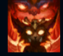
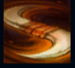
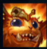
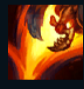
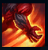

Gnar
| Gnar The Missing Link | |
|---|---|
| Release date | 14.04.2014 |
| Class | Specialist |
| Positions | Top |
| Resource | Rage |
| Range type | Ranged |
| Adaptive type | Physical |
| Base statistics | |||
| Health | 510 – 1615 | Rage | 100 |
| Health regen. | 4.5 – 34.25 |
Rage | 100 |
| Armor | 32 – 74.5 | Attack damage | 59 – 110 |
| Magic resist. | 30 – 38.5 | Crit. damage | 175% |
| Move. speed | 335 | Attack range | 400 |
Gnar este un yordle primordial ale cărui șotii jucăușe pot deveni în orice clipă adevărate accese de furie, transformându-l într-o bestie masivă, hotărâtă să distrugă totul. A fost prins în gheață pură timp de milenii, dar acum a scăpat și țopăie curios de colo-colo printr-o lume schimbată, care i se pare exotică și minunată. E încântat de pericol și aruncă tot ce găsește înspre inamicii lui, fie că e vorba de un bumerang din os sau de o clădire din apropiere. |  |
GENA FURIEI Gnar acumulează furie în timpul luptei. Când atinge nivelul maxim de furie, următoarea sa abilitate îl va transforma în Mega Gnar, oferindu-i capacitate de supraviețuire sporită și acces la noi vrăji. |
||
|---|---|---|---|---|
 |
ARUNCAREA BUMERANGULUI / ARUNCAREA BOLOVANULUI Gnar aruncă un bumerang care provoacă daune și încetinește inamicii pe care îi lovește înainte de a se întoarce la el. Dacă îl prinde, timpul de reactivare al bumerangului este redus. În schimb, Mega Gnar aruncă un bolovan care se oprește la prima unitate lovită, provocând daune și încetinind toți inamicii din jur. Poate fi apoi cules de pe jos pentru a reduce timpul de reactivare. |
|||
 |
HIPER / ȘOC Atacurile și vrăjile lui Gnar îl entuziasmează, oferindu-i daune bonus și viteză de mișcare. Mega Gnar este prea furios pentru a folosi ''Hiper'', însă se poate ridica pe picioarele din spate și poate lovi pământul din fața sa, amețind inamicii din zonă. |
|||
|  |
HOP ȚOP / CATAPULTĂ Gnar sare spre o locație și ricoșează mai departe de pe orice unitate pe care aterizează. Mega Gnar este prea mare pentru a ricoșa, în schimb aterizează cu o forță cutremurătoare, provocând daune în zona din jurul lui. |
|||
 |
GNAR! Mega Gnar aruncă totul din jurul lui în direcția aleasă, provocând daune și încetinind inamicii. Orice inamic care se izbește de un zid este amețit și suferă daune bonus. |